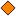

<!doctype html>
<html lang="en">
    <head>
        <meta charset="utf-8">
        <meta http-equiv="X-UA-Compatible" content="IE=edge">
        <meta name="viewport" content="initial-scale=1,user-scalable=no,maximum-scale=1,width=device-width">
        <meta name="mobile-web-app-capable" content="yes">
        <meta name="apple-mobile-web-app-capable" content="yes">
        <link rel="stylesheet" href="css/leaflet.css"><link rel="stylesheet" href="css/L.Control.Locate.min.css">
        <link rel="stylesheet" href="css/qgis2web.css"><link rel="stylesheet" href="css/fontawesome-all.min.css">
        <link rel="stylesheet" href="css/leaflet-search.css">
        <link rel="stylesheet" href="css/leaflet-measure.css">
        <style>
        #map {
            width: 1619px;
            height: 848px;
        }
        </style>
        <title></title>
    </head>
    <body>
        <div id="map">
        </div>
        <script src="js/qgis2web_expressions.js"></script>
        <script src="js/leaflet.js"></script><script src="js/L.Control.Locate.min.js"></script>
        <script src="js/leaflet-svg-shape-markers.min.js"></script>
        <script src="js/leaflet.rotatedMarker.js"></script>
        <script src="js/leaflet.pattern.js"></script>
        <script src="js/leaflet-hash.js"></script>
        <script src="js/Autolinker.min.js"></script>
        <script src="js/rbush.min.js"></script>
        <script src="js/labelgun.min.js"></script>
        <script src="js/labels.js"></script>
        <script src="js/leaflet-measure.js"></script>
        <script src="js/leaflet-search.js"></script>
        <script src="data/Vegetationplotsbog_2.js"></script>
        <script src="data/Vegetationplotswetmeadow_3.js"></script>
        <script src="data/Enhancedsinkplots_4.js"></script>
        <script>
        var map = L.map('map', {
            zoomControl:true, maxZoom:22, minZoom:1
        })
        var hash = new L.Hash(map);
        map.attributionControl.setPrefix('<a href="https://github.com/tomchadwin/qgis2web" target="_blank">qgis2web</a> &middot; <a href="https://leafletjs.com" title="A JS library for interactive maps">Leaflet</a> &middot; <a href="https://qgis.org">QGIS</a>');
        var autolinker = new Autolinker({truncate: {length: 30, location: 'smart'}});
        L.control.locate({locateOptions: {maxZoom: 19}}).addTo(map);
        var measureControl = new L.Control.Measure({
            position: 'topleft',
            primaryLengthUnit: 'meters',
            secondaryLengthUnit: 'kilometers',
            primaryAreaUnit: 'sqmeters',
            secondaryAreaUnit: 'hectares'
        });
        measureControl.addTo(map);
        document.getElementsByClassName('leaflet-control-measure-toggle')[0]
        .innerHTML = '';
        document.getElementsByClassName('leaflet-control-measure-toggle')[0]
        .className += ' fas fa-ruler';
        var bounds_group = new L.featureGroup([]);
        function setBounds() {
            if (bounds_group.getLayers().length) {
                map.fitBounds(bounds_group.getBounds());
            }
        }
        map.createPane('pane_Google_0');
        map.getPane('pane_Google_0').style.zIndex = 400;
        var layer_Google_0 = L.tileLayer('http://www.google.cn/maps/vt?lyrs=s@189&gl=cn&x={x}&y={y}&z={z}', {
            pane: 'pane_Google_0',
            opacity: 1.0,
            attribution: '',
            minZoom: 1,
            maxZoom: 22,
            minNativeZoom: 0,
            maxNativeZoom: 19
        });
        layer_Google_0;
        map.addLayer(layer_Google_0);
        map.createPane('pane_Ph3selected_1');
        map.getPane('pane_Ph3selected_1').style.zIndex = 401;
        var layer_Ph3selected_1 = L.tileLayer('ph3_map/{z}/{x}/{y}.png', {
            pane: 'pane_Ph3selected_1',
            opacity: 1.0,
            attribution: '',
            minZoom: 1,
            maxZoom: 22,
            minNativeZoom: 0,
            maxNativeZoom: 12
        });
        layer_Ph3selected_1;
        map.addLayer(layer_Ph3selected_1);
        function pop_Vegetationplotsbog_2(feature, layer) {
            var popupContent = '<table>\
                    <tr>\
                        <th scope="row">Plot5mID</th>\
                        <td>' + (feature.properties['Plot5mID'] !== null ? autolinker.link(feature.properties['Plot5mID'].toLocaleString()) : '') + '</td>\
                    </tr>\
                    <tr>\
                        <th scope="row">Yeare</th>\
                        <td>' + (feature.properties['Yeare'] !== null ? autolinker.link(feature.properties['Yeare'].toLocaleString()) : '') + '</td>\
                    </tr>\
                    <tr>\
                        <th scope="row">Habitat</th>\
                        <td>' + (feature.properties['Habitat'] !== null ? autolinker.link(feature.properties['Habitat'].toLocaleString()) : '') + '</td>\
                    </tr>\
                    <tr>\
                        <th scope="row">SpRichness</th>\
                        <td>' + (feature.properties['SpRichness'] !== null ? autolinker.link(feature.properties['SpRichness'].toLocaleString()) : '') + '</td>\
                    </tr>\
                    <tr>\
                        <th scope="row">ph3</th>\
                        <td>' + (feature.properties['ph3'] !== null ? autolinker.link(feature.properties['ph3'].toLocaleString()) : '') + '</td>\
                    </tr>\
                </table>';
            layer.bindPopup(popupContent, {maxHeight: 400});
        }

        function style_Vegetationplotsbog_2_0() {
            return {
                pane: 'pane_Vegetationplotsbog_2',
                shape: 'diamond',
                radius: 6.0,
                opacity: 1,
                color: 'rgba(35,35,35,1.0)',
                dashArray: '',
                lineCap: 'butt',
                lineJoin: 'miter',
                weight: 1,
                fill: true,
                fillOpacity: 1,
                fillColor: 'rgba(110,225,225,1.0)',
                interactive: true,
            }
        }
        map.createPane('pane_Vegetationplotsbog_2');
        map.getPane('pane_Vegetationplotsbog_2').style.zIndex = 402;
        map.getPane('pane_Vegetationplotsbog_2').style['mix-blend-mode'] = 'normal';
        var layer_Vegetationplotsbog_2 = new L.geoJson(json_Vegetationplotsbog_2, {
            attribution: '',
            interactive: true,
            dataVar: 'json_Vegetationplotsbog_2',
            layerName: 'layer_Vegetationplotsbog_2',
            pane: 'pane_Vegetationplotsbog_2',
            onEachFeature: pop_Vegetationplotsbog_2,
            pointToLayer: function (feature, latlng) {
                var context = {
                    feature: feature,
                    variables: {}
                };
                return L.shapeMarker(latlng, style_Vegetationplotsbog_2_0(feature));
            },
        });
        bounds_group.addLayer(layer_Vegetationplotsbog_2);
        map.addLayer(layer_Vegetationplotsbog_2);
        function pop_Vegetationplotswetmeadow_3(feature, layer) {
            var popupContent = '<table>\
                    <tr>\
                        <th scope="row">Plot5mID</th>\
                        <td>' + (feature.properties['Plot5mID'] !== null ? autolinker.link(feature.properties['Plot5mID'].toLocaleString()) : '') + '</td>\
                    </tr>\
                    <tr>\
                        <th scope="row">Yeare</th>\
                        <td>' + (feature.properties['Yeare'] !== null ? autolinker.link(feature.properties['Yeare'].toLocaleString()) : '') + '</td>\
                    </tr>\
                    <tr>\
                        <th scope="row">Habitat</th>\
                        <td>' + (feature.properties['Habitat'] !== null ? autolinker.link(feature.properties['Habitat'].toLocaleString()) : '') + '</td>\
                    </tr>\
                    <tr>\
                        <th scope="row">SpRichness</th>\
                        <td>' + (feature.properties['SpRichness'] !== null ? autolinker.link(feature.properties['SpRichness'].toLocaleString()) : '') + '</td>\
                    </tr>\
                    <tr>\
                        <th scope="row">ph3</th>\
                        <td>' + (feature.properties['ph3'] !== null ? autolinker.link(feature.properties['ph3'].toLocaleString()) : '') + '</td>\
                    </tr>\
                </table>';
            layer.bindPopup(popupContent, {maxHeight: 400});
        }

        function style_Vegetationplotswetmeadow_3_0() {
            return {
                pane: 'pane_Vegetationplotswetmeadow_3',
                shape: 'diamond',
                radius: 6.0,
                opacity: 1,
                color: 'rgba(35,35,35,1.0)',
                dashArray: '',
                lineCap: 'butt',
                lineJoin: 'miter',
                weight: 1,
                fill: true,
                fillOpacity: 1,
                fillColor: 'rgba(255,127,0,1.0)',
                interactive: true,
            }
        }
        map.createPane('pane_Vegetationplotswetmeadow_3');
        map.getPane('pane_Vegetationplotswetmeadow_3').style.zIndex = 403;
        map.getPane('pane_Vegetationplotswetmeadow_3').style['mix-blend-mode'] = 'normal';
        var layer_Vegetationplotswetmeadow_3 = new L.geoJson(json_Vegetationplotswetmeadow_3, {
            attribution: '',
            interactive: true,
            dataVar: 'json_Vegetationplotswetmeadow_3',
            layerName: 'layer_Vegetationplotswetmeadow_3',
            pane: 'pane_Vegetationplotswetmeadow_3',
            onEachFeature: pop_Vegetationplotswetmeadow_3,
            pointToLayer: function (feature, latlng) {
                var context = {
                    feature: feature,
                    variables: {}
                };
                return L.shapeMarker(latlng, style_Vegetationplotswetmeadow_3_0(feature));
            },
        });
        bounds_group.addLayer(layer_Vegetationplotswetmeadow_3);
        map.addLayer(layer_Vegetationplotswetmeadow_3);
        function pop_Enhancedsinkplots_4(feature, layer) {
            var popupContent = '<table>\
                    <tr>\
                        <td colspan="2"><strong>PunktID</strong><br />' + (feature.properties['PunktID'] !== null ? autolinker.link(feature.properties['PunktID'].toLocaleString()) : '') + '</td>\
                    </tr>\
                    <tr>\
                        <td colspan="2"><strong>Wet meadow pixels within 500 m</strong><br />' + (feature.properties['n_p_e_05'] !== null ? autolinker.link(feature.properties['n_p_e_05'].toLocaleString()) : '') + '</td>\
                    </tr>\
                    <tr>\
                        <td colspan="2"><strong>Wet meadow pixels within 1 km</strong><br />' + (feature.properties['n_p_e_1'] !== null ? autolinker.link(feature.properties['n_p_e_1'].toLocaleString()) : '') + '</td>\
                    </tr>\
                    <tr>\
                        <td colspan="2"><strong>Bog pixels within 500 m</strong><br />' + (feature.properties['n_p_m_05'] !== null ? autolinker.link(feature.properties['n_p_m_05'].toLocaleString()) : '') + '</td>\
                    </tr>\
                    <tr>\
                        <td colspan="2"><strong>Bog pixels within 1 km</strong><br />' + (feature.properties['n_p_m_1'] !== null ? autolinker.link(feature.properties['n_p_m_1'].toLocaleString()) : '') + '</td>\
                    </tr>\
                    <tr>\
                        <td colspan="2"><strong>Wet meadow vegetation plots within 500 m</strong><br />' + (feature.properties['c_n_05_e'] !== null ? autolinker.link(feature.properties['c_n_05_e'].toLocaleString()) : '') + '</td>\
                    </tr>\
                    <tr>\
                        <td colspan="2"><strong>Bog vegetation plots within 500 m</strong><br />' + (feature.properties['c_n_05_m'] !== null ? autolinker.link(feature.properties['c_n_05_m'].toLocaleString()) : '') + '</td>\
                    </tr>\
                    <tr>\
                        <td colspan="2"><strong>Wet meadow vegetation plots within 1 km</strong><br />' + (feature.properties['c_n_1_e'] !== null ? autolinker.link(feature.properties['c_n_1_e'].toLocaleString()) : '') + '</td>\
                    </tr>\
                    <tr>\
                        <td colspan="2"><strong>Bog vegetation plots within 1 km</strong><br />' + (feature.properties['c_n_1_m'] !== null ? autolinker.link(feature.properties['c_n_1_m'].toLocaleString()) : '') + '</td>\
                    </tr>\
                </table>';
            layer.bindPopup(popupContent, {maxHeight: 400});
        }

        function style_Enhancedsinkplots_4_0() {
            return {
                pane: 'pane_Enhancedsinkplots_4',
                radius: 6.0,
                opacity: 1,
                color: 'rgba(35,35,35,1.0)',
                dashArray: '',
                lineCap: 'butt',
                lineJoin: 'miter',
                weight: 1,
                fill: true,
                fillOpacity: 1,
                fillColor: 'rgba(229,96,227,1.0)',
                interactive: true,
            }
        }
        map.createPane('pane_Enhancedsinkplots_4');
        map.getPane('pane_Enhancedsinkplots_4').style.zIndex = 404;
        map.getPane('pane_Enhancedsinkplots_4').style['mix-blend-mode'] = 'normal';
        var layer_Enhancedsinkplots_4 = new L.geoJson(json_Enhancedsinkplots_4, {
            attribution: '',
            interactive: true,
            dataVar: 'json_Enhancedsinkplots_4',
            layerName: 'layer_Enhancedsinkplots_4',
            pane: 'pane_Enhancedsinkplots_4',
            onEachFeature: pop_Enhancedsinkplots_4,
            pointToLayer: function (feature, latlng) {
                var context = {
                    feature: feature,
                    variables: {}
                };
                return L.circleMarker(latlng, style_Enhancedsinkplots_4_0(feature));
            },
        });
        bounds_group.addLayer(layer_Enhancedsinkplots_4);
        map.addLayer(layer_Enhancedsinkplots_4);
        var baseMaps = {};
        L.control.layers(baseMaps,{' Enhanced sink plots': layer_Enhancedsinkplots_4,' Vegetation plots (wet meadow)': layer_Vegetationplotswetmeadow_3,' Vegetation plots (bog)': layer_Vegetationplotsbog_2,"Ph3 selected": layer_Ph3selected_1,"Google": layer_Google_0,},{collapsed:false}).addTo(map);
        setBounds();
        map.addControl(new L.Control.Search({
            layer: layer_Enhancedsinkplots_4,
            initial: false,
            hideMarkerOnCollapse: true,
            propertyName: 'PunktID'}));
        document.getElementsByClassName('search-button')[0].className +=
         ' fa fa-binoculars';
        </script>
    </body>
</html>
